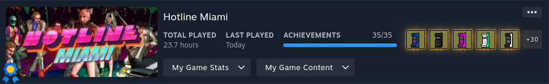

Why Hotline Miami?
I initially started playing this game quite some time ago, as it was a well-known title everyone was talking about. I can't remember all the details, but it seems my friends were into it, and I was looking for a game to fill time between my League of Legends sessions. It has been on my radar to revisit for a while. After my friends recommended Hotline Miami 2 when I was asking for game suggestions, I felt compelled to finish the first game before moving on to the sequel.
Story
Discussing the story of this game in depth is challenging due to its reliance on a pivotal twist. To keep it basic: You control a character who receives enigmatic phone calls instructing him to eliminate members of a Russian crime syndicate. Amidst these missions, you're also unraveling the mystery of who's behind these calls, leading to moments of self-doubt and questioning your own sanity. In my opinion, the story is decent. It moves the game along well without being too complex for the game's overall style and design.
Audio & Video
The soundtrack of this game is the kind that you'd enjoy listening to even outside of the game context. While it's distinctly video game music, it has the unique quality of standing out on its own. Usually, I'm not a big fan of video game music in isolation, as you might have noticed from my other reviews. Apart from the sounds of combat, the music is what you'll be hearing throughout the entire game. Beautiful synthwave tracks.
Hotline Miami is a visually stunning game. Despite using pixel graphics, the design is executed masterfully. Every building and even each room is steeped in a vibrant 80s aesthetic. The weapons and masks you unlock are also impressively designed within the confines of pixel art.
Gameplay Mechanics
I have a bit to share about the mechanics of Hotline Miami. In typical Jasper fashion, let's start with the aspects I didn't enjoy. Firstly, the game had a persistent crashing issue. This wasn't an OS-specific problem, as I experienced crashes across every OS the game is available on, aside from consoles. It seems to suffer from a memory leak that inevitably leads to crashes after a certain point, often not lasting more than a few deaths. It required me to quickly hone my skills to make any significant progress. Speaking of skill, there were quirks in the game that made this difficult. Occasionally, weapons would pass through enemies without causing damage. It's understandable for ranged weapons at close quarters, but even melee attacks sometimes failed to register. I'd swing a melee weapon right through an enemy, only for them to turn and kill me. Also, the hit registration seemed off with some melee weapons if you weren't directly facing the target. Lastly, the cutscenes were a significant annoyance. The game encourages fast play and frequent deaths, but during cutscenes, you're forced to watch them every single time you die. In a game where death can occur up to fifty times per level, the inability to skip these cutscenes felt excessive and disruptive.
Despite those issues, my experience with the game was largely positive. It's a dynamic top-down shooter that keeps you on your toes. You have a wide variety of weapons at your disposal, including throwing, melee, and ranged types. While some weapons may feel similar, it didn't significantly detract from the gameplay. In addition to the weapons, you can choose different masks, each altering your gameplay in unique ways. These masks offer various benefits, like extending your combo window, starting with a weapon, or enhanced scouting vision – typical video game power-ups. As I mentioned earlier, the game's design encourages a rapid, trial-and-error approach. Finding the right combination of path, mask, and weapons for each level, all while maintaining your momentum, is extremely engaging and enjoyable.
Replayability
After completing the game, you're prompted to try for the true ending, which you likely missed if you played without guidance. Discovering the requirements for the true ending isn't straightforward when playing blindly. Additionally, there are masks, A+ ranks, and weapons to unlock. You earn a mask for beating the high score on each level, though some masks must be found, which means you might miss a few on your first run. The same goes for achieving A+ ranks. You might snag some incidentally, but mastering each level to consistently hit those high scores requires time and practice. Given the game's relatively short main story, this added layer of replayability is welcome. It extends the overall playtime, making the game's brief core experience more fulfilling.
Final Thoughts
Overall, I enjoyed playing the game, but recommending it is tough given its technical issues. I'm not alone in experiencing frequent crashes – the Steam discussion forums are full of similar complaints. If you're keen on experiencing this game at its best, playing it on an operating system from around its release year might be the way to go. In that case, I do think it's worth playing. The game's fast-paced, trial-and-error style creates a unique experience. It cleverly disguises a puzzle game within an action-packed, story-driven framework, making it stand out in its genre.
Should you complete Hotline Miami?
This game is concise enough to be finished in a single session, and its achievements are thoughtfully designed. It's a worthy addition to your completionist backlog. While some achievements might prompt a bit of online research, it's a common aspect in many games. Technically, you could deduce all the achievements without external help, but the effort required might be excessive. I have no gripes with the achievements and actually enjoyed pursuing each one.
Stats Gallery
Complete!
